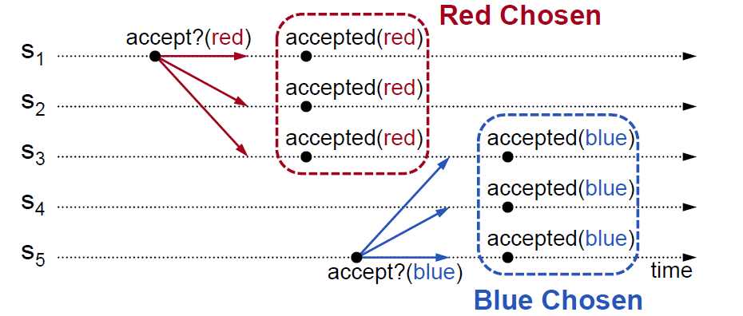

Basic Paxos
Basic Paxos工作流程如下：

问题记录
为什么Paxos使用两阶段协议？
单阶段协议，无论是Accepter只接受第一个值或接受所有的值，都有可能会造成split vote或者多个值同时被chosen。
split vote的情况：

多个值被chosen的情况：
提案的值从何而来？
case 1：Accepter返回PROMISE(n)之前已经accept过其他的提案，由于Paxos协议只允许对唯一一个value达成一致，因此即使这个PROMISE的序列号更高，其value也只能是之前accept过的value。
case 2：Accepter返回PROMISE(n)的时候还没有accpet过任何值，返回的PROMISE不带值，此时Proposal将客户端所请求的值放入ACCEPT请求当中。